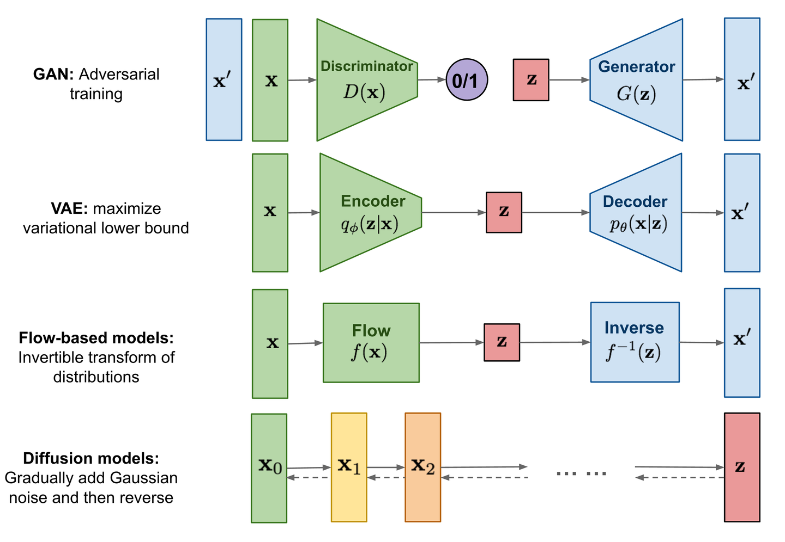
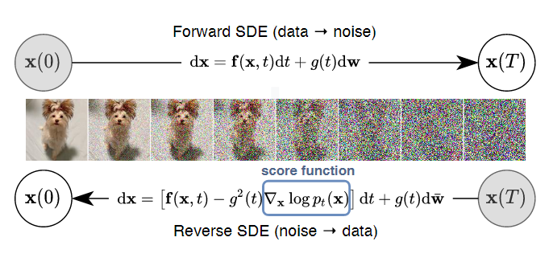
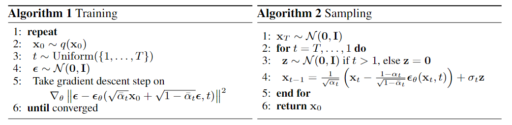
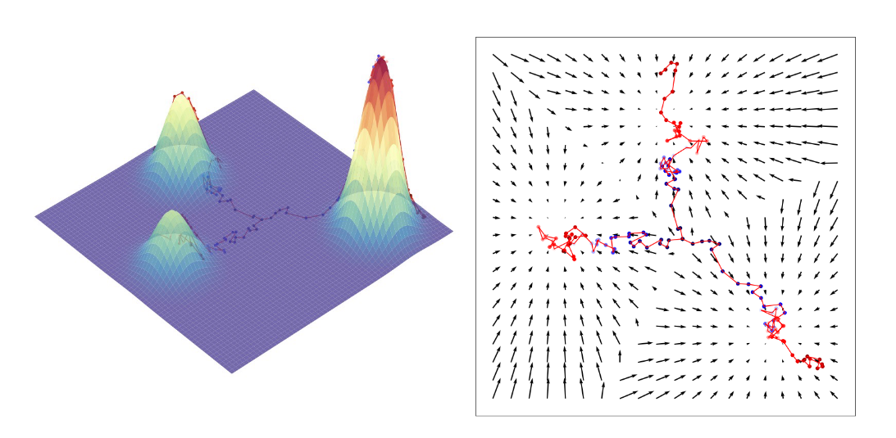

写在前面
大约在一年前的秋天，我听朋友们提到：一款名为StableDiffusion的AIGC生成图片工具正在席卷画师界。彼时的我也尝试着在本地部署了一下这个项目，并且拿它画了些奇妙的图片（doge），效果确实优秀得有些震撼。不过那时的我还没有想到去深究这款工具背后的知识，后来做科研时几次想过要彻底地学习一遍，却也都因为各种事情耽搁了。直到一年后的今天，赋闲在家，静下心来拿起纸笔推导一些数学，理清这强大工具背后坚实的理论基础，或许也是一种不错的消遣。
本文只是作者的一份学习笔记，主要内容大部分来自以下几位知乎大佬的文章： 一文解释 Diffusion Model (一) DDPM 理论推导; 一文解释 Diffusion Model (二) Score-based SDE 理论推导; 如何理解扩散模型中的SDE？
以及宋飏博士关于Score-Based SDE的论文：Score-Based Generative Modeling through Stochastic Differential Equations
以及Google Research关于Diffusion Model框架的工作：Understanding Diffusion Models: A Unified Perspective
学习SDE的笔记我放在这里。 不过里面很意识流+有不少typo+有大段粘贴的前人blog，大家就权当一笑吧。
概念介绍
扩散模型（Diffusion）是一种基于马尔科夫过程，通过多步加噪/去噪过程实现内容生成的模型。它和我们之前学过的VAE十分类似，都需要经过原图片->高斯噪声->生成图片这三步过程。
注：从我的个人感受来看，这几种生成模型的big-picture其实都差不多：它们都经历了原图->白噪声->新图的流程，且它们在数学上都是一个从某个概率分布里采样出实例的采样器（这个后面会解释）。而Diffusion相比于先前模型的最大区别可能就是引入了微分的思想，使得生成过程更加细粒度（精细）和可控。
一位dalao制作了几种生成式模型的对比图如下：
在实践中，Diffusion Model有很多种实现方法，例如基于VAE压缩latent space（隐空间）思想的Stable Diffusion，或者不压缩latent space（也就是让隐空间大小和原图保持一致）的DDPM。我们这篇文章不去讨论具体的实现细节，只是从general的理论角度梳理一遍Diffusion的整个过程。不过如果对这个过程理解得足够透彻，再去看具体的实现方式想必也不会感到困难了。
流程概述
Diffusion Model的训练流程可以大致分为两个阶段：第一阶段是加噪阶段，给定一张原图 \(x_0\)，我们会对其进行 \(T\) 步加噪，最终将其变为高斯噪声 \(x_T\)；第二阶段是去噪阶段，对于刚加完噪的 \(x_T\)，我们会对其进行 \(T\) 步去噪，最终尝试将其复原成原图 \(x_0\)。在训练结束进行推理时，我们不进行第一阶段，而是取一个白噪声然后进行第二阶段，最后“复原”得到的图片就是模型生成的图片。
注：一张图片是怎么和随机变量产生联系的？假定原图是一个 \( (H, W, 3) \) 的张量，那么它在每一个位置 \( (x, y, z) \) 的值都是一个确定的数字，看起来好像和随机变量没什么关系。但是不要忘了，我们训练的对象并非一张图片，而是一整类图片。假如我们有 \(N\) 张人脸的图片（大小都是 \( (H, W, 3) \)），那么现在的每一个位置 \( (x, y, z) \) 上就有 \(N\) 个数值，可以视作一个概率分布。这些概率分布事实上就代表了这类图片的所有特征，例如人脸在靠近屏幕中间的位置 \( (x, y, z) \) 通常是肉色的，那么这里的概率分布方差 \( \sigma \) 就会较小，且RGB三通道的均值 \( \mu \) 拼起来会产生“肉色”。
绝大多数的Diffusion Model都是基于上述流程实现的，它们的区别通常只在于“加噪”和“去噪”的方式不同。当然，仅凭抽象的框架很难深入推导模型的内容，在这里我们尝试具体一些，以比较流行的DDPM（Denoising Diffusion Probabilistic Models）为例进行一些推导。
加噪过程/前向过程
假设我们的加噪过程已经进行了 \(t-1\) 步，现在要进行 \(x_{t-1} \rightarrow x_t\) 的加噪。一个自然的想法是把图片和噪声构造成一个线性关系：
\[ x_{t}=a_{t}x_{t-1}+b_{t}\epsilon_{t} \tag{1} \]
其中
\[ a_{t} \in [0, 1], b_{t} \in (0, 1), \epsilon_{t} \sim \mathcal{N}(\mathbf{0}, \mathbf{I}) \]
递归的形式不太好解，我们考虑能不能写成通式：
\[ \begin{aligned}{x}_{t}& =a_tx_{t-1}+b_t{\epsilon}_t \\ &=a_t(a_{t-1}x_{t-2}+b_{t-1}\epsilon_{t-1})+b_t\epsilon_t \\&=\ldots \\&=(a_t\cdots a_1)x_0+(a_t\cdots a_2)b_1\epsilon_1+\cdots+a_tb_{t-1}\epsilon_{t-1}+b_t\epsilon_t\end{aligned}\tag{2} \]
不妨假定 \(\epsilon_1, \cdots, \epsilon_{t-1}, \epsilon_t\) 相互独立，根据正态分布的可加性，上式可以写成
\[ x_t = (a_t\cdots a_1)x_0 + \sqrt{(a_t\cdots a_2)^2b_1^2+\cdots+a_t^2b_{t-1}^2+b_t^2}\bar{\epsilon}_t \tag{3} \]
这个式子有点不好看，因为里面既有 \(a\) 又有 \(b\) ，难以化简。我们是否可以尝试把这两个参数归一化，也就是令 \(a_i^2+b_i^2=1, i=1,2,\cdots,t\) ，以此来消掉其中的一个变量呢？既然我们希望最终得到的图片 \(x_T \sim \mathcal{N}(\mathbf{0}, \mathbf{I})\) ，那么归一化显然不会影响我们达到这个目标，故我们尝试归一化，此时有
\[ (a_t\cdots a_1)^2 + (a_t\cdots a_2)^2b_1^2+\cdots+a_t^2b_{t-1}^2+b_t^2 = 1\tag{4} \]
于是我们就可以令 \(\bar{a}_t = (a_t\cdots a_1)^2\)，从而 \(\sqrt{(a_t\cdots a_2)^2b_1^2+\cdots+a_t^2b_{t-1}^2+b_t^2} = \sqrt{1-\bar{a}_t}\)。于是式 (3) 可以写成
\[ x_t = \sqrt{\bar{a}_t} x_0 + \sqrt{1-\bar{a}_t}\bar{\epsilon}_t \tag{5} \]
同理，因为有了 \(a_t^2+b_t^2=1\) ，我们就可以将(1)式也改写成
\[ x_t = \sqrt{\alpha_t} x_{t-1} + \sqrt{1-\alpha_t}\epsilon_t \tag{6} \]
将上面两个式子表示成概率分布的形式，我们就有\[ x_{t}\sim q(x_{t}|x_{0})=\mathcal{N}(x_{t};\sqrt{\bar{a}_{t}}x_{0},(1-\bar{a}_{t})\mathbf{I}) \tag{7} \]
\[ x_{t}\sim q(x_{t}|x_{t-1})=\mathcal{N}(x_{t};\sqrt{\alpha_{t}}x_{t-1},(1-\alpha_{t})\mathbf{I}) \tag{8} \]
整个前向过程可以表达为
\[ q(x_{1:T}|x_0)=\prod_{t=1}^Tq(x_t|x_{t-1})\tag{9} \]
注：Diffusion的整个前向过程没有要学习的参数，而VAE的加噪过程是需要训练的，因为它希望通过训练将不同类的图片特征在latent space里区别开（还记得之前VAE那篇文章的可视化吗？数字1-9在latent space里对应不同的位置），也就是说VAE压缩出来的噪声图片实际上也是包含信息的，因此它需要进行图片->对应噪声->对应图片这样一对一的转换才能保证正确性。而Diffusion认为压缩出来的噪声图片完全不包含任何信息，它学习的是噪声->图片的每一步转换过程。
去噪过程/逆向过程
在去噪过程中，我们希望实现从纯噪声 \(x_T\) 到真实图片 \(x_0\) 的转换，为此我们同样考虑每一步 \(x_t \rightarrow x_{t-1}\) ，但与前向过程不同，此时我们不把它建模成一个简单的线性关系（但仍然建模成正态分布），而是让模型通过神经网络的参数 \(\theta\) 去学习每一步去噪过程的期望和方差
\[ x_{t-1}\sim p_{\theta}(x_{t-1}|x_t) = \mathcal{N}(x_{t-1};\mu_{\theta}(x_t, t), \Sigma_{\theta}(x_t, t))\tag{10} \]
事实上这看起来就是学了前向过程的反向分布，我们后面也会再提到这一点。
将所有步累积起来得到整个随机过程的概率分布
\[ p_{\theta}(x_{0:T}) = p(x_T)\prod_{t=1}^{T}p_{\theta}(x_{t-1}|x_{t})\tag{11} \]
注：这是整个随机过程 \(x_T, x_{T-1}, \cdots, x_0\) 的概率分布，不是 \(x_0\) 的概率分布。想要求 \(x_0\) 的分布，我们需要枚举所有可能的 \(x_T, x_{T-1}, \cdots, x_0\) 的概率分布，并将它们所对应的随机过程 \(x'_T,x'_{T-1},\cdots, x'_1, x'_0\) 的概率求和（积分），这也就是所谓的全概率公式。
从概率论的视角看，我们模型的计算结果应当是 \(x_0\) 的分布 \(p_{\theta}(x_0)\) （就是上述积分之后的结果），而我们的优化目标就是希望 \(p_{\theta}(x_0)\) 尽可能接近 \(x_0\) 的真实分布（比如人脸）。不过我们并不知道真实数据 \(x_0\) 的分布，但我们手里有若干个从 \(x_0\) 的真实分布里采样出来的样本 \(\textbf{x}_0\) ，那么我们自然希望这些样本在我们建模出来的分布里能够具有尽量高的概率（举个例子，假如我们有很多张人脸，但建模建成了熊猫脸的分布，那么我们的样本在模型里出现的概率就会很低），也就是我们希望求出
\[ \hat{\theta} = \arg \mathop{\max}\limits_{\theta} p_{\theta}(\boldsymbol{x}_0)= \arg \mathop{\max}\limits_{\theta} \log p_{\theta}(\boldsymbol{x}_0)\tag{12} \]
（事实上这就是最大似然估计的思想，这里只是又用白话叙述了一遍）
现在我们考虑通过上面提到的积分方法求出 \(p_{\theta}(x_0)\) 的表达式
\[ \begin{aligned} \log p_{\theta}(\boldsymbol{x}_{0})& =\log\int p_\theta(\boldsymbol{x}_0,\boldsymbol{x}_1,\ldots,\boldsymbol{x}_T)d\boldsymbol{x}_1d\boldsymbol{x}_2\ldots d\boldsymbol{x}_T \\ &=\log\int p_{\theta}\left(\boldsymbol{x}_{0:T}\right)d\boldsymbol{x}_{1:T} \\ &=\log\int\frac{p_{\theta}(\boldsymbol{x}_{0:T})q(\boldsymbol{x}_{1:T}|\boldsymbol{x}_{0})}{q(\boldsymbol{x}_{1:T}|\boldsymbol{x}_{0})}d\boldsymbol{x}_{1:T} \\ &=\log\mathbb{E}_{q(\boldsymbol{x}_{1:T}|\boldsymbol{x}_0)}\left[\frac{p_\theta(\boldsymbol{x}_{0:T})}{q(\boldsymbol{x}_{1:T}|\boldsymbol{x}_0)}\right] \\ &\geq\mathbb{E}_{q(\boldsymbol{x}_{1:T}|\boldsymbol{x}_{0})}\left[\log\frac{p_{\theta}(\boldsymbol{x}_{0:T})}{q(\boldsymbol{x}_{1:T}|\boldsymbol{x}_{0})}\right](Jensen不等式) \\ &=\mathbb{E}_{q(\boldsymbol{x}_{1:T}|\boldsymbol{x}_{0})}\left[\log\frac{p(\boldsymbol{x}_{T})\prod_{t=1}^{T}p_{\theta}(\boldsymbol{x}_{t-1}|\boldsymbol{x}_{t})}{\prod_{t=1}^{T}q(\boldsymbol{x}_{t}|\boldsymbol{x}_{t-1})}\right] \\ &=\mathbb{E}_{q(\boldsymbol{x}_{1: T}|\boldsymbol{x}_{0})}\left[\log\frac{p(\boldsymbol{x}_{T})p_{\theta}(\boldsymbol{x}_{0}|\boldsymbol{x}_{1})\prod_{t=2}^{T}p_{\theta}(\boldsymbol{x}_{t-1}|\boldsymbol{x}_{t})}{q(\boldsymbol{x}_{T}|\boldsymbol{x}_{T-1})\prod_{t=1}^{T-1}q(\boldsymbol{x}_{t}|\boldsymbol{x}_{t-1})}\right] \\ &=\mathbb{E}_{q(\boldsymbol{x}_{1:T}|\boldsymbol{x}_{0})}\left[\log\frac{p(\boldsymbol{x}_{T})p_{\theta}(\boldsymbol{x}_{0}|\boldsymbol{x}_{1})\prod_{t=1}^{T-1}p_{\theta}(\boldsymbol{x}_{t}|\boldsymbol{x}_{t+1})}{q(\boldsymbol{x}_{T}|\boldsymbol{x}_{T-1})\prod_{t=1}^{T-1}q(\boldsymbol{x}_{t}|\boldsymbol{x}_{t-1})}\right] \\ &=\mathbb{E}_{q(\boldsymbol{x}_{1:T}|\boldsymbol{x}_0)}\left[\log\frac{p(\boldsymbol{x}_T)p_\theta(\boldsymbol{x}_0|\boldsymbol{x}_1)}{q(\boldsymbol{x}_T|\boldsymbol{x}_{T-1})}\right]+\mathbb{E}_{q(\boldsymbol{x}_{1:T}|\boldsymbol{x}_0)}\left[\log\prod_{t=1}^{T-1}\frac{p_\theta(\boldsymbol{x}_t|\boldsymbol{x}_{t+1})}{q(\boldsymbol{x}_t|\boldsymbol{x}_{t-1})}\right]\\ &=\mathbb{E}_{q(\boldsymbol{x}_{1:T}|\boldsymbol{x}_0)}\left[\log p_\theta(\boldsymbol{x}_0|\boldsymbol{x}_1)\right]+\mathbb{E}_{q(\boldsymbol{x}_{1:T}|\boldsymbol{x}_0)}\left[\log\frac{p(\boldsymbol{x}_T)}{q(\boldsymbol{x}_T|\boldsymbol{x}_{T-1})}\right]+\mathbb{E}_{q(\boldsymbol{x}_{1:T}|\boldsymbol{x}_0)}\left[\sum_{t=1}^{T-1}\log\frac{p_\theta(\boldsymbol{x}_t|\boldsymbol{x}_{t+1})}{q(\boldsymbol{x}_t|\boldsymbol{x}_{t-1})}\right]\\ &=\mathbb{E}_{q(\boldsymbol{x}_{1:T}|\boldsymbol{x}_0)}\left[\log p_\theta(\boldsymbol{x}_0|\boldsymbol{x}_1)\right]+\mathbb{E}_{q(\boldsymbol{x}_{1:T}|\boldsymbol{x}_0)}\left[\log\frac{p(\boldsymbol{x}_T)}{q(\boldsymbol{x}_T|\boldsymbol{x}_{T-1})}\right]+\sum_{t=1}^{T-1}\mathbb{E}_{q(\boldsymbol{x}_{1}|\boldsymbol{x}_0)}\left[\log\frac{p_\theta(\boldsymbol{x}_t|\boldsymbol{x}_{t+1})}{q(\boldsymbol{x}_t|\boldsymbol{x}_{t-1})}\right]\\ &=\mathbb{E}_{q(\boldsymbol{x}_{1}|\boldsymbol{x}_0)}\left[\log p_\theta(\boldsymbol{x}_0|\boldsymbol{x}_1)\right]+\mathbb{E}_{q(\boldsymbol{x}_{T},\boldsymbol{x}_{T-1}|\boldsymbol{x}_0)}\left[\log\frac{p(\boldsymbol{x}_T)}{q(\boldsymbol{x}_T|\boldsymbol{x}_{T-1})}\right]+\sum_{t=1}^{T-1}\mathbb{E}_{q(\boldsymbol{x}_{t-1},\boldsymbol{x}_{t},\boldsymbol{x}_{t+1}|\boldsymbol{x}_0)}\left[\log\frac{p_\theta(\boldsymbol{x}_t|\boldsymbol{x}_{t+1})}{q(\boldsymbol{x}_t|\boldsymbol{x}_{t-1})}\right]\\ &=\mathbb{E}_{q(\boldsymbol{x}_{1}|\boldsymbol{x}_0)}\left[\log p_\theta(\boldsymbol{x}_0|\boldsymbol{x}_1)\right]-\mathbb{E}_{q(\boldsymbol{x}_{T-1}|\boldsymbol{x}_0)}\mathbb{E}_{q(\boldsymbol{x}_{T}|\boldsymbol{x}_{T-1})}\left[\log\frac{q(\boldsymbol{x}_T|\boldsymbol{x}_{T-1})}{p(\boldsymbol{x}_T)}\right]- \sum_{t=1}^{T-1}\mathbb{E}_{q(\boldsymbol{x}_{t-1},\boldsymbol{x}_{t+1}|\boldsymbol{x}_0)}\mathbb{E}_{q(\boldsymbol{x}_{t}|\boldsymbol{x}_0)}\left[\log\frac{q(\boldsymbol{x}_t|\boldsymbol{x}_{t-1})}{p_\theta(\boldsymbol{x}_t|\boldsymbol{x}_{t+1})}\right]\\ &=\mathbb{E}_{q(\boldsymbol{x}_{1}|\boldsymbol{x}_0)}\left[\log p_\theta(\boldsymbol{x}_0|\boldsymbol{x}_1)\right]-\mathbb{E}_{q(\boldsymbol{x}_{T-1}|\boldsymbol{x}_0)}[D_{\mathrm{KL}}(q(\boldsymbol{x}_T|\boldsymbol{x}_{T-1})||p(\boldsymbol{x}_T))]-\sum_{t=1}^{T-1}\mathbb{E}_{q(\boldsymbol{x}_{t-1},\boldsymbol{x}_{t+1}|\boldsymbol{x}_0)}[D_{\mathrm{KL}}q(\boldsymbol{x}_t|\boldsymbol{x}_{t-1})||p_\theta(\boldsymbol{x}_t|\boldsymbol{x}_{t+1})]\\ \end{aligned}\tag{13} \]
我们知道，KL散度可以视作对两个概率分布度量距离。考察上面式子中的三项，第一项是在反向过程的最后一步最大化 \(p_{\theta}(x_0)\) ，第二项是在反向过程的第一步试图拉近 \(q(x_T)\) 和 \(p(x_T)\) ，但这一步没有可训练的参数；第三步则是在反向过程的所有中间步都试图拉近 \(q(x_t)\) 和 \(p(x_t)\) 。
注：可以理解为，我们希望模型在反向过程中能够尽可能准确地模拟出前向过程的每一步。我们前面提到过 \(q(x_t|x_{t-1})=\mathcal{N}(x_t;\alpha_t x_{t-1},(1-\alpha_t)\mathbf{I})\) ，这表示前向过程的每一步都是一个正态分布，这个正态分布的均值包含了我们希望获得的原图特征的一个部分（微分）。所以事实上我们希望准确预测的是前向过程每一步的均值，这一点马上就会在后面提到。
现在我们已经可以通过梯度下降的办法去优化上面的式子了（事实上我们优化的是 \(p_{\theta}(x_0)\) 的一个下界，但这和对原目标函数的优化可以视作是等效的），但是有一个小问题：在第三项计算中我们每次需要同时求三项 \(x_t, x_{t-1}, x_{t+1}\) 才能算一个KL散度，这是否有点复杂？能否进行一点优化？一个直接的想法是利用贝叶斯公式把 \(p_{\theta}(x_t|x_{t+1})\) 和 \(q(x_t|x_{t-1})\) 都改成同向的（比如都改成 \(x_t \rightarrow x_{t-1}\) ），根据
\[ q\left(\boldsymbol{x}_{t}|\boldsymbol{x}_{t-1},\boldsymbol{x}_{0}\right)=\frac{q\left(\boldsymbol{x}_{t-1}|\boldsymbol{x}_{t},\boldsymbol{x}_{0}\right)q\left(\boldsymbol{x}_{t}|\boldsymbol{x}_{0}\right)}{q\left(\boldsymbol{x}_{t-1}|\boldsymbol{x}_{0}\right)}\tag{14} \]
我们可以推得（仿照上面过程即可，这里就不推了）
\[\mathbb{E}_{q(\boldsymbol{x}_{1:T}|\boldsymbol{x}_{0})}\left[\log\frac{p_{\theta}(\boldsymbol{x}_{0:T})}{q(\boldsymbol{x}_{1:T}|\boldsymbol{x}_{0})}\right]=\mathbb{E}_{q(\boldsymbol{x}_{1}|\boldsymbol{x}_0)}\left[\log p_\theta(\boldsymbol{x}_0|\boldsymbol{x}_1)\right]-D_{\mathrm{KL}}(q(\boldsymbol{x}_T|\boldsymbol{x}_{0})||p(\boldsymbol{x}_T))-\sum_{t=2}^T\mathbb{E}_{q(\boldsymbol{x}_t|\boldsymbol{x}_0)}\left[D_{\mathrm{KL}}\left(q(\boldsymbol{x}_{t-1}|\boldsymbol{x}_t,\boldsymbol{x}_0)\|p_\theta(\boldsymbol{x}_{t-1}|\boldsymbol{x}_t))\right]\right]\tag{15}\]
现在我们就把第三项优化成了每次只需要算两项的形式，不过注意到 \(q(x_{t-1}|x_t, x_0)\) 和前向过程是反着的，我们并不知道它的分布是什么，需要用贝叶斯公式算一下
\[ \begin{aligned}q\left(\boldsymbol{x}_{t-1}|\boldsymbol{x}_{t},\boldsymbol{x}_{0}\right)& =\frac{q\left(\boldsymbol{x}_t|\boldsymbol{x}_{t-1},\boldsymbol{x}_0\right)q\left(\boldsymbol{x}_{t-1}|\boldsymbol{x}_0\right)}{q\left(\boldsymbol{x}_t|\boldsymbol{x}_0\right)} \\&=\frac{q\left(\boldsymbol{x}_t|\boldsymbol{x}_{t-1}\right)q\left(\boldsymbol{x}_{t-1}|\boldsymbol{x}_0\right)}{q\left(\boldsymbol{x}_t|\boldsymbol{x}_0\right)} \\&=\frac{\mathcal{N}\left(\boldsymbol{x}_t;\sqrt{\alpha_t}\boldsymbol{x}_{t-1},\left(1-\alpha_t\right)\mathbf{I}\right)\mathcal{N}\left(\boldsymbol{x}_{t-1};\sqrt{\bar{\alpha}_{t-1}}\boldsymbol{x}_0,\left(1-\bar{\alpha}_{t-1}\right)\mathbf{I}\right)}{\mathcal{N}\left(\boldsymbol{x}_t;\sqrt{\bar{\alpha}_t}\boldsymbol{x}_0,\left(1-\bar{\alpha}_t\right)\mathbf{I}\right)}\\ &\propto\mathcal{N}\left(\boldsymbol{x}_{t-1};\frac{\sqrt{\alpha_t}\left(1-\bar{\alpha}_{t-1}\right)\boldsymbol{x}_t+\sqrt{\bar{\alpha}_{t-1}}\left(1-\alpha_t\right)\boldsymbol{x}_0}{1-\bar{\alpha}_t},\frac{\left(1-\alpha_t\right)\left(1-\bar{\alpha}_{t-1}\right)}{1-\bar{\alpha}_t}\mathbf{I}\right)\\&=\mathcal{N}\left(\boldsymbol{x}_{t-1};\boldsymbol{\mu}_q(\boldsymbol{x}_t,\boldsymbol{x}_0),\boldsymbol{\Sigma}_q(t)\right)\end{aligned}\tag{16} \]
现在我们再把前面建模好的\(p_{\theta}(x_{t-1}|x_t) = \mathcal{N}(x_{t-1};\mu_{\theta}(x_t, t), \Sigma_{\theta}(x_t, t))\)带进去，前面的【注】提到我们希望估计的是均值，而方差并不携带信息，所以我们不妨就把 \(\Sigma_{\theta}(x_t, t)\) 当做和 \(q(x_{t-1}|x_t, x_0)\) 的方差完全一样（因为优化它对我们学习图片特征没有任何帮助，所以不如不优化）。
现在我们再次考虑KL散度的计算，根据公式
\[ \begin{aligned}&D_{\mathrm{KL}}\left(\mathcal{N}\left(\boldsymbol{x};\boldsymbol{\mu}_{x},\boldsymbol{\Sigma}_{x}\right)\left\Vert\mathcal{N}\left(\boldsymbol{y};\boldsymbol{\mu}_{y},\boldsymbol{\Sigma}_{y}\right)\right)\right. \\&=\frac{1}{2}\left[\log\frac{|\boldsymbol{\Sigma}_{y}|}{|\boldsymbol{\Sigma}_{x}|}-d+\mathrm{tr}\left(\boldsymbol{\Sigma}_{y}^{-1}\boldsymbol{\Sigma}_{x}\right)+\left(\boldsymbol{\mu}_{y}-\boldsymbol{\mu}_{x}\right)^{T}\boldsymbol{\Sigma}_{y}^{-1}\left(\boldsymbol{\mu}_{y}-\boldsymbol{\mu}_{x}\right)\right]\end{aligned}\tag{17} \]
可以计算得到
\[ \begin{aligned}&\arg\underset{\theta}{\operatorname*{min}}D_\mathrm{KL}\left(q\left(\boldsymbol{x}_{t-1}|\boldsymbol{x}_t,\boldsymbol{x}_0\right)\|p_{\boldsymbol{\theta}}\left(\boldsymbol{x}_{t-1}|\boldsymbol{x}_t\right)\right) \\&=\arg\underset{\theta}{\operatorname*{min}}D_{\mathrm{KL}}\left(\mathcal{N}\left(\boldsymbol{x}_{t-1};\boldsymbol{\mu}_q,\boldsymbol{\Sigma}_q(t)\right)\|\mathcal{N}\left(\boldsymbol{x}_{t-1};\boldsymbol{\mu}_{\boldsymbol{\theta}},\boldsymbol{\Sigma}_q(t)\right)\right) \\&=\arg\underset{\theta}{\operatorname*{min}}\frac12\left[\log\frac{|\boldsymbol{\Sigma}_q(t)|}{|\boldsymbol{\Sigma}_q(t)|}-d+\mathrm{tr}\big(\boldsymbol{\Sigma}_q(t)^{-1}\boldsymbol{\Sigma}_q(t)\big)+(\boldsymbol{\mu}_\theta-\boldsymbol{\mu}_q)^T\boldsymbol{\Sigma}_q(t)^{-1}\left(\boldsymbol{\mu}_\theta-\boldsymbol{\mu}_q\right)\right] \\&=\arg\underset{\theta}{\operatorname*{min}}\frac12\left[\log1-d+d+\left(\boldsymbol{\mu}_\theta-\boldsymbol{\mu}_q\right)^T\boldsymbol{\Sigma}_q(t)^{-1}\left(\boldsymbol{\mu}_\theta-\boldsymbol{\mu}_q\right)\right] \\&=\arg\underset{\theta}{\operatorname*{min}}\frac{1}{2}\Big[(\boldsymbol{\mu}_{\theta}-\boldsymbol{\mu}_{q})^{T}\boldsymbol{\Sigma}_{q}(t)^{-1}(\boldsymbol{\mu}_{\theta}-\boldsymbol{\mu}_{q})\Big] \\&=\arg\underset{\theta}{\operatorname*{min}}\frac{1}{2}\Big[\left(\boldsymbol{\mu}_{\theta}-\boldsymbol{\mu}_{q}\right)^{T}\left(\sigma_{q}^{2}(t)\mathbf{I}\right)^{-1}\left(\boldsymbol{\mu}_{\theta}-\boldsymbol{\mu}_{q}\right)\Big] \\&=\arg\underset{\theta}{\operatorname*{min}}\frac1{2\sigma_q^2(t)}\left[\left\|\boldsymbol{\mu}_\theta-\boldsymbol{\mu}_q\right\|_2^2\right]\end{aligned}\tag{18} \]
算了这么一堆，实际上我们只是从数学角度严格地证明了【注】中的观察是正确的。
现在考虑怎么学习这个 \(\mu_q\) ，当然我们可以直接硬学，但是如果能做一点分解然后学其中的一个部分或许会更简单。
我们已经知道
\[\boldsymbol{\mu}_q = \frac{\sqrt{\alpha_t}\left(1-\bar{\alpha}_{t-1}\right)}{{1-\bar{\alpha}_t}}\boldsymbol{x}_t+\frac{\sqrt{\bar{\alpha}_{t-1}}\left(1-\alpha_t\right)}{{1-\bar{\alpha}_t}}\boldsymbol{x}_0\tag{19}\]
在逆向过程中，我们的 \(\mu_{\theta}\) 是 \((x_t, t)\) 的函数，所以上面的 \(x_t\) 那部分可以直接拿下来用，需要通过神经网络拟合的只有 \(x_0\) 那部分，也就是说
\[ \boldsymbol{\mu}_\theta = \frac{\sqrt{\alpha_t}\left(1-\bar{\alpha}_{t-1}\right)}{{1-\bar{\alpha}_t}}\boldsymbol{x}_t+\frac{\sqrt{\bar{\alpha}_{t-1}}\left(1-\alpha_t\right)}{{1-\bar{\alpha}_t}}f_\theta(\boldsymbol{x}_t, t)\tag{20} \]
那么我们就可以算得
\[ \begin{aligned}&\arg\underset{\theta}{\operatorname*{min}}D_\mathrm{KL}\left(q\left(\boldsymbol{x}_{t-1}|\boldsymbol{x}_t,\boldsymbol{x}_0\right)\|p_{\boldsymbol{\theta}}\left(\boldsymbol{x}_{t-1}|\boldsymbol{x}_t\right)\right)\\&=\arg\underset{\theta}{\operatorname*{min}}\frac1{2\sigma_q^2(t)}\left[\left\|\boldsymbol{\mu}_\theta-\boldsymbol{\mu}_q\right\|_2^2\right]\\&=\arg\underset{\theta}{\operatorname*{min}}\frac{1}{2\sigma_{q}^{2}(t)}\frac{\bar{\alpha}_{t-1}(1-\alpha_t)^{2}}{\left(1-\bar{\alpha}_{t}\right)^{2}}\left[\left\|f_{\theta}(\boldsymbol{x}_{t},t)-\boldsymbol{x}_{0}\right\|_{2}^{2}\right]\end{aligned}\tag{21} \]
也就是说，我们最终学习的还是拟合原图 \(\textbf{x}_0\)
注：既然都是拟合原图 \(x_0\) ，那Diffusion岂不是和之前的生成模型没有区别了？但是值得注意的是：我们是从 \(x_t\) 出发预测 \(x_0\) 的，而不是从啥也没有或者白噪声出发预测 \(x_0\) 的。从数学上来看，这里就是Diffusion和其他生成模型的最本质区别：它将整个生成过程进行了微分化，每次只预测一段过程而非整个过程。从直观上来看，这大大减小了预测的难度（提升了预测的质量）。后面我们还会从更加数学的角度分析这样做的优势。
但是这仍然没有达到最简形式，因为我们在前向过程中知道 \(x_t = \sqrt{\bar{\alpha}_t} x_0 + \sqrt{1-\bar{\alpha}_t} \epsilon\) ，这意味着我们可以将 \(x_0\) 用 \(x_t\) 来表示，于是就有
\[ \begin{aligned}\boldsymbol{\mu}_{q}& =\frac{\sqrt{\bar{\alpha}_{t-1}}(1-\alpha_{t})}{1-\bar{\alpha}_{t}}\boldsymbol{x}_{0}+\frac{\sqrt{\alpha_{t}}\left(1-\bar{\alpha}_{t-1}\right)}{1-\bar{\alpha}_{t}}\boldsymbol{x}_{t} \\&=\frac{\sqrt{\bar{\alpha}_{t-1}}(1-\alpha_{t})}{1-\bar{\alpha}_{t}}\frac{\boldsymbol{x}_{t}-\sqrt{1-\bar{\alpha}_{t}}\boldsymbol{\bar{\epsilon}}_{t}}{\sqrt{\bar{\alpha}_{t}}}+\frac{\sqrt{\alpha_{t}}\left(1-\bar{\alpha}_{t-1}\right)}{1-\bar{\alpha}_{t}}\boldsymbol{x}_{t}\\&=\frac1{\sqrt{\alpha_{t}}}\boldsymbol{x}_{t}-\frac{1-\alpha_{t}}{\sqrt{1-\bar{\alpha}_{t}}\sqrt{\alpha_{t}}}\boldsymbol{\bar{\epsilon}}_{t}\end{aligned}\tag{22} \]
那么我们又有了一种新的预测方法：预测噪声！也就是建模
\[ \boldsymbol{\mu}_\theta = \frac1{\sqrt{\alpha_{t}}}\boldsymbol{x}_{t}-\frac{1-\alpha_{t}}{\sqrt{1-\bar{\alpha}_{t}}\sqrt{\alpha_{t}}}f_\theta(\boldsymbol{x}_t, t)\tag{23} \]
然后优化目标就变成了
\[ \begin{aligned}&\arg\operatorname*{min}_{\theta}D_{\mathrm{KL}}\left(q\left(\boldsymbol{x}_{t-1}|\boldsymbol{x}_{t},\boldsymbol{x}_{0}\right)\|p_{\boldsymbol{\theta}}\left(\boldsymbol{x}_{t-1}|\boldsymbol{x}_{t}\right)\right) \\&=\arg\operatorname*{min}_{\theta}\frac{1}{2\sigma_{q}^{2}(t)}\frac{(1-\alpha_{t})^{2}}{\left(1-\bar{\alpha}_{t}\right)\alpha_{t}}\left[\left\|f_{\boldsymbol{\theta}}(\boldsymbol{x}_{t},t)-\boldsymbol{\bar\epsilon}_{t}\right\|_{2}^{2}\right]\end{aligned}\tag{24} \]
注1：但是从数学直觉上来看预测噪声显然更好，因为 \(x_0\) 是一个相当复杂的分布，而噪声只是一个正态分布。 注2：这里有的朋友可能会疑惑：我们绕了一圈难道就是学了个正态分布生成器吗？那我不用学不也可以生成正态分布？请注意：我们这篇文章里所有黑体的字母都代表一个具体的样本值，而不是一个随机变量。我们预测的不是随便一个噪声值，而是从具体值 \(x_0\) 变换到具体值 \(x_t\) 所加的那个具体值 \(\bar{\epsilon}_t\) 。 诚然这个值是从标准正态分布 \(\bar{\epsilon}_t\) 里采样出来的一个样本，但我们根本不关心这个分布，我们只关心这个具体的样本值。也就是说，这个模型本质上是一个能够根据输入，从标准正态分布里采样出对应值的采样器（回忆一下GAN和VAE，其实它们也是一个概率分布的采样器，只是采用了不同的学习方式）。
整体的训练和推断流程如下图所示。这里的每一步训练都是随机选择一个 \(t\) 进行的，实际上只要保证 \(t\) 的均匀分布应该就可以了。
SDE框架下的建模
上面的内容以DDPM为例，基本概述了Diffusion的整个流程。现在我们希望站在一个更高的角度，从SDE（随机微分方程）的角度对Diffusion的流程进行一个建模。
我们将前向过程认定为一个可微的随机过程（Ito过程，名称来源于日本数学家伊藤清，这部分理论主要由他完成） \(x_t\) ，也就是说它满足
\[ \mathrm{d}x_t=f_t(x_t)\mathrm{d}t+g_t\mathrm{d}w_t \tag{25} \]
其中 \(w_t\) 代表维纳过程（用于描述布朗运动的随机过程）
注：想要完全理解这个式子需要补充一下随机过程和随机微积分的知识，这里提供一种直觉理解的方式：一个随机过程关于时间通常是不可微的。这是因为，可微的定义是 \(\Delta x_t = A \Delta t + o(\Delta t), t \rightarrow 0\) ，但随机变量的 \(\Delta x_t\) 在 \(t \rightarrow 0\) 的时候仍是一个随机变量，它有小概率变得非常大，小量记号 \(o\) 不再适用。因此我们需要引入一个适应随机变量微分的微分量，而维纳过程作为最简单的随机过程，能够很好地满足我们的要求（这就是说，我们把正态分布视作了随机变量世界中的“1”）。
于是我们重新考虑前向过程每一步的计算，离散形式下的每一步是 \(x_t \rightarrow x_t + 1\) ，而连续形式下的每一步就应该是 \(x_t \rightarrow x_t + \Delta t\) ，按照式(25)的格式可以写作
\[ x_{t+\Delta t} = x_t + f_t(x_t)\Delta t + g_t\sqrt{\Delta t}\epsilon\tag{26} \]
其中 \(\epsilon \sim \mathcal{N}(\mathbf{0},\mathbf{I}),\Delta t \to 0\) 。
注：如果没有学习过维纳过程，需要知道 \(\mathrm{d}w_t = w_{t + \Delta t} - w_t = \mathcal{N}(0, \Delta t \mathbf{I})\) （建议还是学习一下）。
那么前向过程的概率分布就可以写作
\[ \begin{aligned}q(x_{t+\Delta t}|x_t)&=\mathcal{N}\left(x_{t+\Delta t};x_t+f_t(x_t)\Delta t,g_t^2\Delta t\mathbf{I}\right)\\&\propto\exp\left(-\frac{[x_{t+\Delta t}-x_t-f_t(x_t)\Delta t]^2}{2g_t^2\Delta t}\right)\end{aligned}\tag{27} \]
根据贝叶斯公式我们同样可以得到反向过程的概率分布
\[ \begin{aligned}p(x_{t}|x_{t+\Delta t})& =\frac{p(x_{t+\Delta t}|x_{t})p(x_{t})}{p(x_{t+\Delta t})}=p(x_{t+\Delta t}|x_{t})\exp(\log p(x_{t})-\log p(x_{t+\Delta t}))\\&\propto\exp\left(-\frac{[x_{t+\Delta t}-x_t-f_t(x_t)\Delta t]^2}{2g_t^2\Delta t}+\log p(x_t)-\log p(x_{t+\Delta t})\right)\end{aligned}\tag{28} \]
由Ito引理（随机变量函数的泰勒展开）我们知道
\[ \log p(x_{t+\Delta t})=\log p(x_t)+(x_{t+\Delta t}-x_t)\nabla_{x_t}\log p(x_t)+o(1)\tag{29} \]
于是上式可以改写为
\[ \begin{aligned}p(x_{t}|x_{t+\Delta t})&\propto\exp\left(-\frac{[x_{t+\Delta t}-x_t-f_t(x_t)\Delta t]^2}{2g_t^2\Delta t}+\log p(x_t)-\log p(x_{t+\Delta t})\right)\\&=\exp\left(-\frac{[x_{t+\Delta t}-x_t-f_t(x_t)\Delta t]^2}{2g_t^2\Delta t}-(x_{t+\Delta t}-x_t)\nabla_{x_t}\log p(x_t)+o(1)\right)\\&=\exp\left(-\frac{[x_{t+\Delta t}-x_t-f_t(x_t)\Delta t]^2+2g_t^2\Delta t(x_{t+\Delta t}-x_t)\nabla_{x_t}\log p(x_t)}{2g_t^2\Delta t}+o(1)\right)\\&=\exp\left(-\frac{(x_{t+\Delta t}-x_t)^2-2(x_{t+\Delta t}-x_t)\Delta t[f_t(x_t)-g_t^2\nabla_{x_t}\log p(x_t)]+[f_t(x_t)-g_t^2\nabla_{x_t}\log p(x_t)]^2(\Delta t)^2+[g_t^2\nabla_{x_t}\log p(x_t)\Delta t]^2}{2g_t^2\Delta t}+o(1)\right)\\&=\exp\left(-\frac{\{x_{t+\Delta t}-x_t-[f_t(x_t)-g_t^2\nabla_{x_t}\log p(x_t)]\Delta t\}^2}{2g_t^2\Delta t}+o(1)\right)\end{aligned}\tag{30} \]
注意到反向过程中 \(x_{t+\Delta t}\) 才是已知，而不是 \(x_t\) 。不过由于 \(\Delta t \to 0\) ，直接替换即可，同时去掉小量 \(o(1)\) 。
\[ p(x_{t}|x_{t+\Delta t})\propto \exp\left(-\frac{\{x_{t+\Delta t}-x_t-[f_{t+\Delta t}(x_{t+\Delta t})-g_{t+\Delta t}^2\nabla_{x_{t+\Delta t}}\log p(x_{t+\Delta t})]\Delta t\}^2}{2g_{t+\Delta t}^2\Delta t}\right)\tag{31} \]
写成概率分布的形式就是
\[ p(x_t|x_{t+\Delta t}) = \mathcal{N}\left(x_t;x_{t+\Delta t}-[f_{t+\Delta t}(x_{t+\Delta t})-g_{t+\Delta t}^2\nabla_{x_{t+\Delta t}}\log p(x_{t+\Delta t})]\Delta t,g_{t+\Delta t}^2\Delta t\mathbf{I}\right)\tag{32} \]
转换成Ito积分的形式就是
\[ \mathrm{d}x_t = [f_{t+\Delta t}(x_{t+\Delta t})-g_{t+\Delta t}^2\nabla_{x_{t+\Delta t}}\log p(x_{t+\Delta t})]\mathrm{d}t + g_{t+\Delta t} \mathrm{d}w_t\tag{33} \]
在上式中， \(f\) 和 \(g\) 是我们自己定义的系数，唯一的未知量就是 \(\nabla_{x_{t+\Delta t}}\log p(x_{t+\Delta t})\) ，我们使用神经网络拟合的也正是这个量。从数学上看，它相当于给概率空间的每个点都分配了一个梯度，沿着这个梯度一直走就能到达 \(max \log p(x_{t+\Delta t})\) 的最优化目标。
任何不同的Diffusion模型，其实都只是在式(32)中采用了不同的 \(f\) 和 \(g\) 实现的结果。